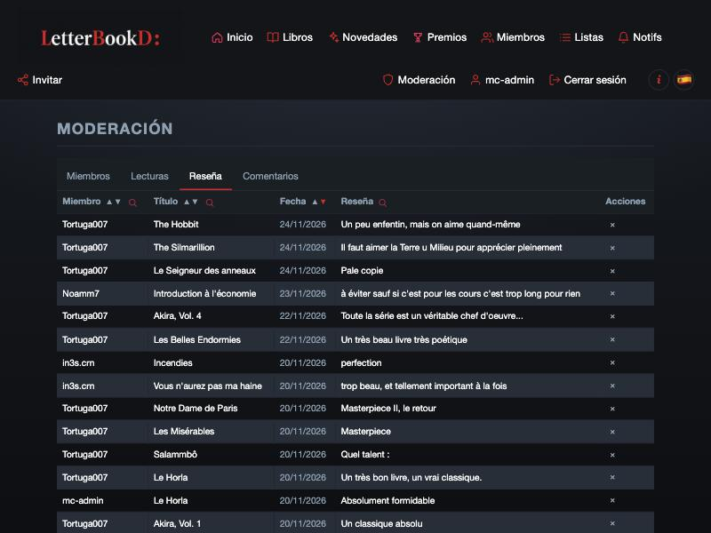

Moderación — Reseñas Solo administradores
Para qué sirve: Todas las reseñas escritas en el club, con un extracto del texto. Permite a los administradores eliminar rápidamente una reseña inapropiada sin tocar la ficha de lectura en sí.

Recorrido
Tabla: Miembro (autor de la reseña), Título (libro), Fecha (de la reseña), Reseña (extracto del texto) y Acciones (cruz para eliminar). La columna Reseña se puede ordenar y filtrar por texto, lo que resulta útil para buscar una palabra clave que haya motivado una denuncia. Eliminar una reseña borra el texto, pero conserva la ficha de lectura (nota y estado): así la estrella del miembro sigue en la media.
Cadenas de acción
Cada fila describe un disparador en la interfaz, el modal o formulario que abre, y el efecto producido.
| Disparador | Modal / Campos | Efecto |
|---|---|---|
| Iconos de orden / filtro (lupa en la columna Reseña) | — | Orden estándar; filtro de texto sobre el contenido de la reseña. |
| Botón cruz (×) en una fila | Formulario POST de confirmación. | Elimina SOLO el texto de la reseña. La nota se mantiene, la ficha de lectura se mantiene y los comentarios vinculados se mantienen, aunque pierden su contexto. |